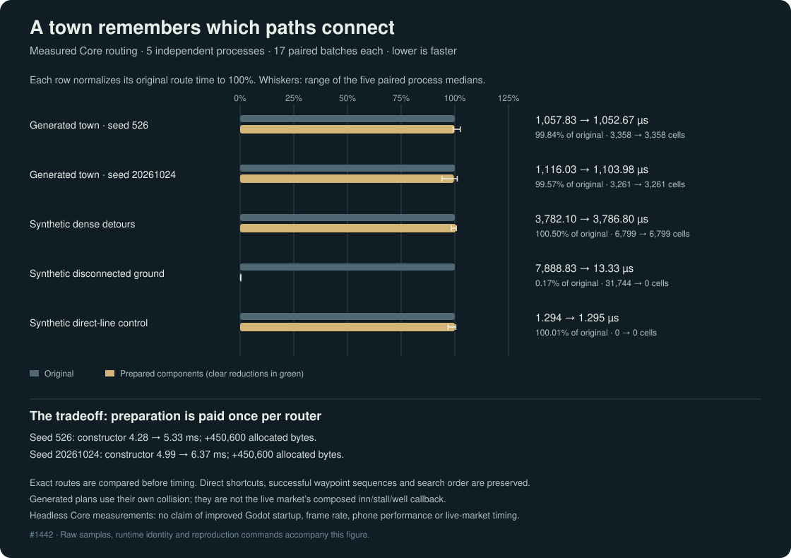

The roads a town remembers
A town feels alive when its people can get on with their day. The smith leaves home, a neighbour finds the market, and someone trying to reach a closed-off courtyard gives up without making the rest of the simulation wait.
This update works beneath those journeys. Townsfolk already share a picture of where a person can stand. They now remember which patches of that ground actually join each other.
Learning the streets once
Previously, an impossible destination could make a route request search an entire connected neighbourhood before returning empty-handed. Every further request had to learn the same disappointing answer again.
The new router labels connected ground once when it is built. After the existing quick checks, a destination in a separate patch can be refused before the expensive search begins. Ordinary journeys keep their existing search order, corners, doorway rules and path smoothing. A straightforward walk across an open square keeps its quick path too.
Proving the change
More than 41,000 little journeys were compared with the previous router across every possible arrangement of a small test grid. Further checks covered generated towns, separate inn floors, narrow doors, blocked corners, isolated rooms and repeated requests. Successful routes keep exactly the same waypoints.
In a deliberately disconnected test landscape, a request previously inspected 31,744 cells before failing. It now inspects none in the search. Across five independent benchmark runs, the measured time per request fell from roughly 7.9 milliseconds to 0.013 milliseconds. These are measurements of the routing code outside the game engine; they do not establish a frame-rate improvement in play.

Ordinary successful routes measured essentially the same as before. Preparation has a price: around 440 KiB of additional memory per generated-town router in the test, and roughly one to one-and-a-half extra milliseconds to build it. That work is paid once, while townsfolk reuse the result throughout their day.
An earlier experiment also tried remembering every neighbouring step. It did not earn its extra complexity in the measurements, so the final change keeps the smaller connectivity improvement.
This work concerns townsfolk using the shared settlement router. Player click routes, terraced-town navigation and changes to the shape of the world have their own requirements.